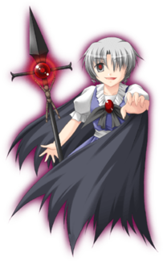

- Welcome to Touhou Wiki!
- Please register to edit. For assistance, check in with our Discord server or IRC channel.
Muse (Seihou Character)
| ミューズ Muse mjɯᵝːzɯᵝ | |
|---|---|
|
 Muse in Banshiryuu
| |
| Species | |
| Abilities |
Alchemy |
| Age |
Unknown (lived for a long time) |
| Occupation | |
| Location |
Seihou World (Earth) |
Music Themes | |
| |
Appearances | |
| Official Games | |
| |
- "Muse" redirects here. For the vocal arrange album by Seventh Heaven MAXION, see Muse
- Note: This article is part of the Seihou Project by the Doujin circle "Shunsatsu sare do?".
Muse (ミューズ Myuuzu) is known as the fusion of science and magic, the Clan leader who dreams of merging magic with modern science. She's a master of alchemy, so she can manipulate any type of matter into whatever form, shape, or composition she wishes. A master puppeteer, she uses her puppets as weapons and is extremely proficient with them. She also has complete mastery over the art of throwing crosses (not knifes).
General Information[edit]
Muse first appeared in Kioh Gyoku, where she appeared as an unlockable playable character and the final boss of that game. About 7 years later when Banshiryuu had C74 version release, she appeared as the 6th Extra Stage boss as part of a boss rush.
Muse was a character who fought in flesh without a machine, something strange for a Seihou Project character. Muse is long-lived, but her age is unknown, but perhaps because her appearance is somewhat child-like, she's treated as a child by VIVIT and a few other characters. Also, she can manifest or hide her wings on a whim. She is usually silent, but when she loses her temper, she starts talking rapidly.
Species[edit]
Muse isn't human since she's stated a numerous times that she'll not lose to a human, but her true species is a real mystery. Due to her characteristics of using 'dark' magic with crosses, having red eyes in Banshiryuu and that she used the word 'twilight' towards Erich,[1] she may be a vampire. Logically however, vampires cannot live under sunlight, and numerous times she could be shown under sunlight in outer space. The official log on "Shunsatsu sare do?" by Ponchi states at the start "Whether she is a god or a devil."
Character Basis[edit]
Name[edit]
Her name is Muse (ミューズ). The name could mean one of the nine Ancient Greek deities of the arts. It could also mean "a source of inspiration".
Design[edit]
In Kioh Gyoku and Banshiryuu's official art, she has gray hair curled at the sides of her face and gray eyes. She wears a blue shirt and skirt with a black ribbon attached with a red jewel. She also wears a long black cape and carries what appears to be something like a wooden doll and a black cross. In Banshiryuu, she doesn't have her black cross and doll and is seen with a spear with a cross at the top. In Kioh Gyoku, she doesn't wear a cape.
Muse's Appearances[edit]
- Banshiryuu
In Banshiryuu, the heroine encounters Muse in Outer Space, determined to not be defeated by the heroine. Despite this, Muse was defeated.
Relationships[edit]
| Attention: This section is a stub and it needs expanding with more information related to the section's topic. If you can add to it in any way, please do so. |
- Morgan
<add relation here>
- Erich & VIVIT
There seems to be something between Muse and Erich, looking at his matters related to VIVIT with hostility. For the conversations in Kioh Gyoku, Muse responds with composure to other characters, but for some reason, Muse bears a sense of hatred against VIVIT. Also, since Muse doesn't think of battles against either Erich or VIVIT lightly, there's probably some relation between them.
Additional Information[edit]
- In comparison, the color palette of her and Sakuya Izayoi are rather similar: Grey hair with longer sideburns, and a blue dress.
- Muse is one of the few characters in the Seihou Project who doesn't need a Spaceship to attack in battle. The others are VIVIT, VIVIT-r, Hirano Sakurasaki, Yuitia and Icarus.
Fandom[edit]
Official Profiles[edit]
| 【ミューズ】 神か悪魔か、とにかく同世代の人間にはない存在感を持つ。 |
Muse
Whether she is a god or a devil, she has a great presence rare among those of her generation. --Shunsatsu sare do?, Developer's Log - Aug 19, 2006 - Ponchi |
Official Sources[edit]
- 2001/12/30 Kioh Gyoku
- 2008/08/16 Banshiryuu
References[edit]
| This page is part of Project Characters, a Touhou Wiki project that aims to write proper descriptions for all official characters of Touhou Project. Please keep the character page guidelines in mind when contributing. |